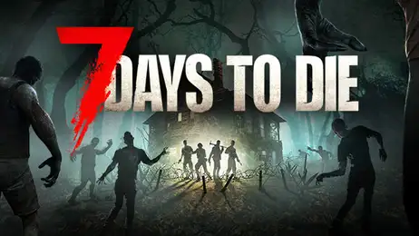
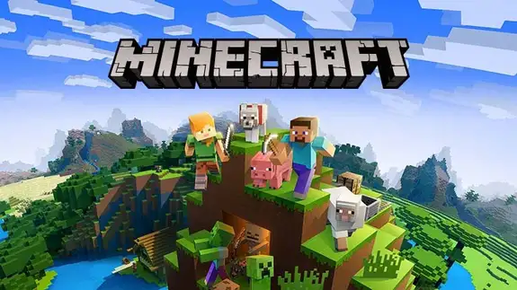

Entegrasyonlar
Favori oyunlarınız ve yayın araçlarınızı bağlayın; mevcut kurulumunuzla uyumlu çalışır.

Yayın araçları
OBS Studio
Açık kaynak video kaydı ve canlı yayın yazılımı.

Yayın araçları
Streamer.bot
Canlı yayınlar için otomasyon ve etkileşim araçları.

Oyun modları
7 Days to Die
Zombi hayatta kalma sandbox: inşa, üret, hayatta kal.

TuÅŸ atama
Getting Over It
Kazan adamlı zorlu tırmanma oyunu.

Oyun modları
GTA-V
Los Santos’ta soygunlar ve kaos; geniş açık dünya.

TuÅŸ atama
Roblox
Kullanıcıların oluşturduğu oyun evreni.

Oyun modları
RDR 2
Modern çağın eşiğinde haydutlar ve hayatta kalma destanı.

Oyun modları
Minecraft
Bloklarla sınırsız dünyada inşa, keşif ve hayatta kalma.

Oyun modları
Plants vs Zombies
Güçlü bitkilerle komik zombilere karşı evinizi savunun.